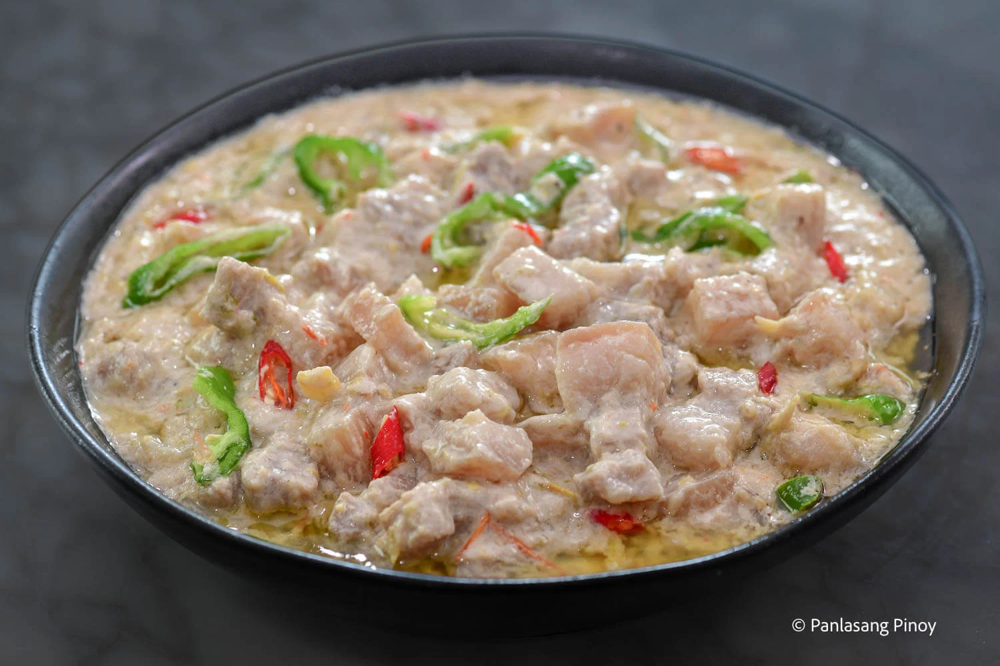

Home
Bicol Express

Ingredients for Bicol Express
Here’s what you’ll need, and why each ingredient matters:
- Pork belly – This cut is used in the recipe due to its fat content, which helps keep the meat moist. Other cuts of pork, such as kasim or pork shoulder, can also be used as alternatives. Pork chops are suitable for Bicol express as well, demonstrated by my pork chop bicol express.
- Coconut milk – This essential ingredient can be fresh, canned, or powdered based on availability.
- Coconut cream – This ingredient is incorporated towards the final stages of the cooking process to enhance the sauce’s depth and richness.
- Shrimp paste (bagoong alamang) – The main flavor source. Fresh or cooked bagoong can be used. Balao, a Filipino fermented shrimp condiment made by mixing small shrimp with salt and rice, then fermenting, is also an option.
- Garlic – Crushed, chopped, or minced. This helps build the basic flavor of the dish.
- Thai chili pepper – A hot chili pepper, 10 times spicier than Jalapeno. Siling Labuyo or bird’s eye chili pepper works well for this recipe too.
- Ginger – Crushed or minced, this contributes to the foundational flavors of the dish.
- Onions – Enhance the depth of flavor in Bicol Express. Any variety is suitable.
- Serrano pepper – long green peppers are great. Siling pansigang works well too.
How to Cook Bicol Express
Let’s break this down into four easy steps:
- Combine the ingredients together – Get ready to make the creamiest pork dish with a bit of a kick! Start by taking out your pan. Proceed by combining minced ginger, crushed garlic, chopped onion, sliced pork, chopped chili pepper, and coconut milk. Mix everything together before turning-on the heat.
- Simmer until the pork tenderizes – Turn on the heat and let it boil. Once the mixture boils, simmer it for around 50 minutes. You may add a cup of coconut cream and half of the bagoong alamang after this. Let the mixture cook using low heat until it reduces to a quarter.
- Add coconut cream and chili peppers – Afterwards, we will add the rest of the coconut cream and adjust the flavor by adding more bagoong if necessary. Also add the Serrano peppers or long green pepper. Continue cooking in low heat until the sauce thickens.
- Serve! – Make sure to serve this nice and hot, and you now have enough Bicol Express for 6! Also try serving it the traditional manner– with some steaming, white rice.